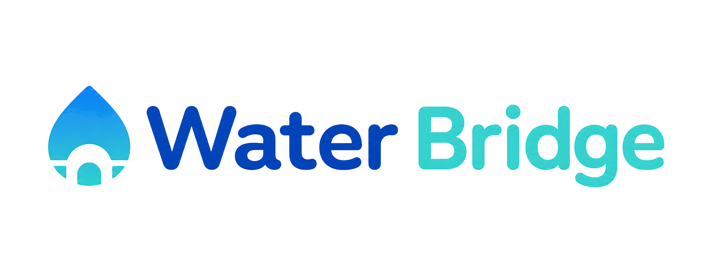

1. 고객 증상 입력
제품과 증상, 문진 답변을 한 번에 수집

WEEKLY UPDATE · WEEK 07
Agenda
What WaterBridge Does
고객이 정수기 이상 증상을 입력하면 공식 문서에서 근거를 찾고, 안전하게 안내할 수 없는 경우에는 사람에게 넘긴다.
제품과 증상, 문진 답변을 한 번에 수집
증상 이해 → 공식 근거 검색 → 안내 판단
바로 안내·추가 질문·사람 검토·상담 연결로 분기
고객에게 안전한 안내를 주거나 상담사에게 맥락을 전달
Week 07 Highlights
AI가 답변만 만드는 단계를 넘어
고객과 상담사에게 전달되는 흐름을 연결했다.
Multi-Agent Evolution
기본 분석 흐름 · 한 Process에서 순차 실행
AGENT 01
고객 표현을 구조화하고 위험 신호·추가 질문을 찾는다.
AGENT 02
제품과 증상에 맞는 검증 문서를 검색하고 근거를 선별한다.
AGENT 03
Safety와 근거를 바탕으로 안내·대기·상담 필요를 결정한다.
일반 안내·추가 질문·첫 사람 검토
맥락정리 Agent는 호출하지 않는다.
실제 상담 Handoff가 결정된 경우만
문진 답변·고객 행동·승인 근거를 상담용 요약으로 정리해 Handoff v2에 담는다.
Safety Routing
일반
제품과 증상에 맞는 근거가 있고 상담이 필요하지 않을 때만 자가 안내를 제공한다.
주의
AI 초안을 바로 보여주지 않고 담당자가 확인한 결과만 고객에게 전달한다.
위험 · 근거 부족
위험 신호와 고객 답변·행동을 정리해 상담사가 바로 이어서 대응할 수 있게 한다.
Reliable Retrieval
ANSWER EVIDENCE
원문 페이지 전체를 그대로 답변에 쓰지 않고, 제품·증상과 직접 관련된 검증 문장만 선별한다.
해당 제품 매뉴얼로 답할 수 없는 질문은 검색 전에 막는다.
“물이 약하게 나와요”처럼 다양한 표현을 보완하되 공식 문서는 바꾸지 않는다.
검색 실험과 개발 도구가 동일한 Evidence 기준으로 결과를 비교한다.
Local 진단과 실제 pgvector·Provider·서비스 E2E 결과를 따로 보고한다.
Service Integration
Experiment A · E02-v2
진단용 초안 · 우선 후보
Child는 256 token·Overlap 32로 잘게 검색하고, 긴 Parent는 답변을 만들 때 필요한 맥락으로만 유지했다.
의미: 자동 재청킹이 필요할 때의 우선 후보이며, 현재 운영 Curated Child 구조를 즉시 교체한다는 결론은 아니다.
Experiment B · E03
진단용 초안 · 개발 단계 1위
Parent-Child-256과 동일한 43개 질의를 고정하고 모델만 바꿨을 때, 다섯 모델 중 모든 주요 순위 지표가 가장 높았다.
추가 관찰: Qwen3는 상위 5개 포함률은 79.1%였지만 1위 정답률은 2.3%였다. 후보 회수와 최상위 순위화는 다른 문제였다.
In Progress
초안 결과를 독립 검증 세트·점수 기준·근거 없음 질문과 원시 결과 파일로 재현해 운영 채택 여부를 결정한다.
AI 전송부터 Backend 저장·Replay·상담사/고객 Projection까지 같은 Correlation으로 확인한다.
Checkpoint·재처리와 Web·Mobile 승인 결과 소비를 독립 QA로 재현한다.
권한·데이터 정합성, Safety 우선순위, Timeout·409·Replay와 성능을 함께 기록한다.
다음 업데이트는 “개발 우선 조합의 독립 재현”과 “고객→AI→상담사→고객 전체 흐름 증거”로 닫는다.
←→ 이전·다음 슬라이드
Space 다음 슬라이드
HomeEnd 처음·마지막
N 발표자 메모
F 전체 화면
?Esc 도움말 열기·닫기